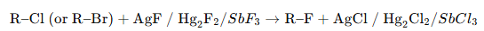
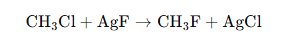
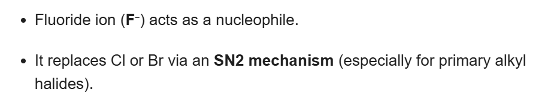

The Swarts reaction is an organic halogen exchange reaction used for the preparation of
alkyl fluorides from alkyl chlorides or alkyl bromides using metallic fluorides such as
AgF, Hg2F2, CoF2, or SbF3.
In this reaction, the chlorine or bromine atom of an alkyl halide is replaced by fluorine.
The Swarts reaction is an important industrial method for the preparation of organic fluorine compounds,
which are widely used in refrigerants, pharmaceuticals, and agrochemicals.

Methyl chloride reacts with silver fluoride to produce methyl fluoride.

